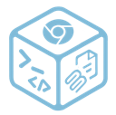
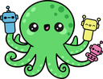
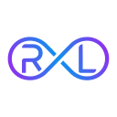

Sandboxes for AI agents to run code (2026)
Sandboxes and isolated runtimes where agents can run code and tools away from your machine and data. Here are the top 25 of 133 from the AgentScout directory.
Quick answer: the top picks on this list, ranked by GitHub stars and listing maturity, are Deer Flow, AstrBot and Context Mode, out of 25 tools listed below. At a glance: 23 open-source, 24 free or freemium and 23 local or self-hosted across 25 link-checked tools (last verified ).
Verified on : every tool link on this page was checked by our daily link check. No paid placements.
Ranked comparison (top 10)
| # | Tool | Pricing | Best for | Open source | Runs locally | GitHub stars |
|---|---|---|---|---|---|---|
| 1 | Open source | write code, build an agent | Yes | Self-hosted | 84,715 | |
| 2 | AstrBot | Open source | build an agent, automate workflows | Yes | Self-hosted | 44,991 |
| 3 | Context Mode | Source-available + cloud | write code, run code safely | No | 32,905 | |
| 4 | Cua | Open source + cloud | automate the browser, control a computer | Yes | Self-hosted | 31,341 |
| 5 | LangChain Deep Agents | Open source | build an agent, run code safely | Yes | Self-hosted | 30,785 |
| 6 | Open source | build multi-agent systems, build an agent | Yes | Self-hosted | 30,393 | |
| 7 | ego lite | Freemium | automate the browser, automate workflows | No | 20,809 | |
| 8 | Open source | write code, run code safely | Yes | Self-hosted | 20,733 | |
| 9 | Open source | QA & testing | Yes | Self-hosted | 18,913 | |
| 10 | Open source | write code, run code safely | Yes | Self-hosted | 16,293 |
Updated
How we picked and ranked: tools are matched by category, the pricing each maker states and what each tool says it does. They are ranked by GitHub stars as recorded on each listing (link checks 2026-11-13); tools without a tracked repo follow, by listing maturity. No paid placements.

1. Deer Flow
DeerFlow 2.0 is ByteDance's MIT-licensed super-agent harness for long tasks that can take minutes to hours, such as research reports, coding jobs and content creation. It coordinates sub-agents, long-term memory, sandboxed code execution, tools and extensible skills, and can take requests through a message gateway; version 2.0 is a ground-up rewrite, with the original Deep Research framework kept on a separate branch.
Pricing (as stated): Free and open source (MIT); you supply your own model API keys. · Mature
2. AstrBot
AstrBot is an AGPL-3.0, all-in-one agent chatbot platform that connects LLMs to messaging apps such as QQ, WeChat Work, Feishu, DingTalk, WeChat Official Accounts, Telegram and Slack. It supports multimodal chat, agents, MCP, skills, knowledge bases, personas and automatic context compression, integrates with Dify, Alibaba Cloud Bailian and Coze, offers an agent sandbox, and has 1,000+ one-click plugins for building personal assistants, support bots or team knowledge bots.
Pricing (as stated): Open source · Mature
3. Context Mode
Context window optimizer for coding agents that sandboxes tool output and persists session memory.
Pricing (as stated): Source-available + cloud · Mature
4. Cua
Open-source infrastructure for computer-use agents: sandboxes, drivers across operating systems and benchmarks.
Pricing (as stated): Open source + cloud · Mature
5. LangChain Deep Agents
Deep Agents is LangChain's MIT-licensed, batteries-included agent harness for long-horizon, multi-step work: an opinionated agent that runs out of the box and lets you override or replace any piece. It provides sub-agents with isolated context windows, a pluggable filesystem (local, sandboxed or remote), context summarisation and offloading, shell access in your sandbox, persistent memory and human-in-the-loop approvals. It is model-agnostic for any tool-calling LLM and builds on LangGraph, with tracing, evals and deployment through LangSmith.
Pricing (as stated): Open source · Active

6. OpenAI Agents SDK (Python)
The OpenAI Agents SDK for Python is an MIT-licensed, lightweight framework for multi-agent workflows. Agents are LLMs with instructions, tools, guardrails and handoffs; sandbox agents work inside a container over long time horizons; realtime and voice agents cover speech pipelines; and built-in tracing shows each run. It is provider-agnostic, working with the OpenAI Responses and Chat Completions APIs and 100+ other LLMs, and has a JavaScript/TypeScript sibling (openai-agents-js).
Pricing (as stated): Open source · Mature, official SDK
7. ego lite
Free macOS browser where Claude Code or Codex run automation tasks in their own isolated Spaces next to your tabs, reusing your logged-in sessions through an agent skill.
Pricing (as stated): Freemium · Mature

8. NVIDIA OpenShell
OpenShell is NVIDIA's Apache-2.0 safe, private runtime for fleets of autonomous AI agents: each agent runs in an isolated sandbox where declarative YAML policies control which files, networks, packages, APIs and credentials it can touch. The project is moving to the CNCF (ai-openshell); the 0.1.x line, at v0.1.8 on Nov 10, 2026, brought a stable release cadence, new isolation primitives, an expanded extension surface and new APIs.
Pricing (as stated): Open source (Apache 2.0) · Active; part of newly announced Open Agent Safety Platform

9. Keploy
Keploy records API traffic and turns it into isolated integration and end-to-end tests
Pricing (as stated): Open-source (Apache-2.0); see site for any hosted plans · Mature

10. OpenSandbox
Secure, fast sandbox runtime for AI agents to run code.
Pricing (as stated): Open source · Mature

11. E2B
Secure cloud sandboxes for running agent-generated code.
Pricing (as stated): Open source + paid cloud · Mature

12. CubeSandbox
Lightweight, concurrent sandbox for running AI agent code securely.
Pricing (as stated): Open source · Mature
13. Open SWE
LangChain's asynchronous coding agent that takes work from GitHub issues, Slack or Linear, implements it in an isolated sandbox and opens a pull request.
Pricing (as stated): Open source · Mature
14. Claurst
Claurst is a GPL-3.0 terminal coding agent written in Rust that began as a clean-room reimplementation of Claude Code's behaviour and now works with several model providers, with a rich TUI, plugins, hooks, chat forking, memory consolidation, per-command approvals and, on macOS, a sandbox that limits shell writes to the workspace and blocks network by default; it has no telemetry and is in beta.
Pricing (as stated): Open source · Mature

15. microsandbox
Local-first microVM runtime for running untrusted agent code safely.
Pricing (as stated): Open source · Mature
16. Steel
Open-source browser API and sandbox for AI agents to control web browsers at scale.
Pricing (as stated): Open source + cloud · Mature

17. smolvm
Portable, branchable virtual machine for running agents safely on your computer.
Pricing (as stated): Open source · Mature

18. Agent Governance Toolkit
Microsoft toolkit for policy enforcement, identity and sandboxing for AI agents.
Pricing (as stated): Open source · Mature
19. Fragments
E2B's open-source Next.js template for AI-generated apps, like Claude Artifacts or v0, with generated code run in secure E2B sandboxes.
Pricing (as stated): Free and open source (Apache-2.0); needs an E2B API key and a model provider key · Mature

20. ThinkRail
JetBrains' lightweight agentic IDE that pairs you with the pi coding agent, with isolated git-worktree workspaces, editor tabs, terminals and diffs.
Pricing (as stated): Open source · Active
21. Rakazo
Self-hosted personal AI agent and persistent teammate for web, desktop, iPhone and Android, with your own choice of model and computer sandbox.
Pricing (as stated): Open source · Active

22. AIO Sandbox
All-in-one Docker sandbox for AI agents that combines a browser, shell, files, MCP, VS Code Server and Jupyter in one container.
Pricing (as stated): Free and open source (Apache-2.0) · Mature

23. Agent Substrate
Agent Substrate runs each agent in its own microVM or gVisor sandbox with an identity, no credentials and no open network, suspending idle agents and resuming in under 500ms.
Pricing (as stated): Open source · Mature

24. RLinf
RLinf is an Apache-2.0 reinforcement-learning infrastructure for embodied and agentic AI that scales PPO and GRPO training across GPUs for vision-language-action robot policies and LLM agents, with recent support for OpenPI pi0.5 fine-tuning, GenieSim, SO-101 arms and humanoid simulators; documentation is on Read the Docs.
Pricing (as stated): Open source · Mature
25. agentOS
A lightweight operating system for agents from Rivet that runs coding agents and their tools inside fast WebAssembly sandboxes with a file system, processes and networking, so you can spin up thousands cheaply.
Pricing (as stated): Free and open source; managed hosting through Rivet Cloud. · Active
FAQ
What are the best AI code sandboxes?
Ranked by tracked GitHub stars, the top AI code sandboxes in our directory are Deer Flow, AstrBot, Context Mode, Cua, LangChain Deep Agents. Stars measure popularity, not fit, so compare a few against your own task.
How many AI code sandboxes does AgentScout list?
133 tools match. This page shows the top 25. Pricing mix on this page: Open source (19), Open source + cloud (4), Source-available + cloud (1), Freemium (1).
How much do these tools cost?
Pricing is what each maker states on their site. Open-source tools are free to self-host but may need a paid model API key or offer paid cloud plans; freemium tools have a free plan with limits. Check each official site.
Where can I see every tool for running code safely?
Our task page lists all 133 tools we match to running code safely.
Related
- All tools for running code safely
- MCP servers (38)
- sandboxes & code execution (34)
- browser/computer use (11)
- coding (10)
By role
Best-of lists
Related categories
Facts come from our directory listings; pricing is as each maker states it and can change. Check official sites before you choose.